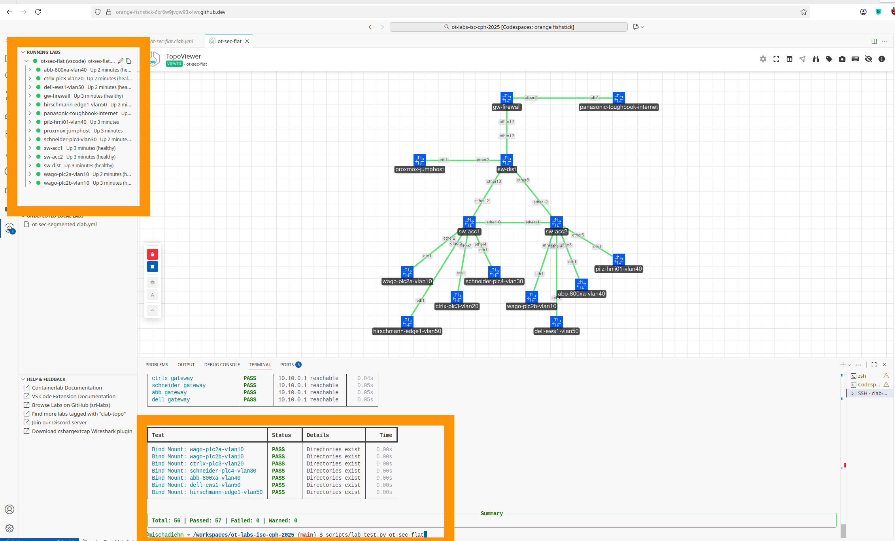
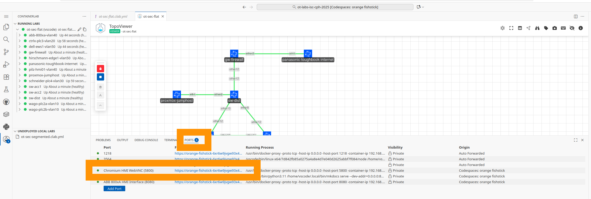
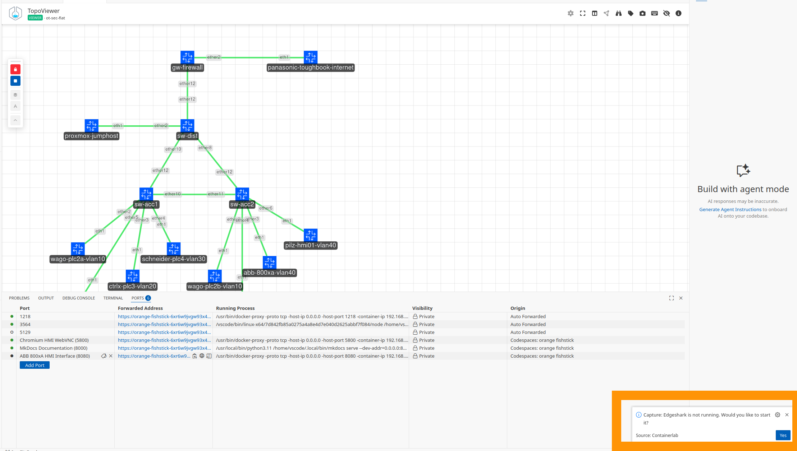

Laborumgebung
Überblick
Dieser Workshop nutzt eine realistische OT-Netzwerk-Laborumgebung, die mit Containerlab aufgebaut wurde. Das Labor simuliert eine typische Industrieanlage mit mehreren Sicherheitszonen, SPSen, Netzwerksegmentierung und Überwachungspunkten, die reale Deployments widerspiegeln können.
Das Labor ist herstellerneutral und verwendet ausschliesslich Open-Source- und kostenfreie Werkzeuge. Alle Komponenten laufen in Containern, was schnelle Bereitstellung, Experimente und Zurücksetzen während praktischer Übungen ermöglicht.

Erste Schritte
Laborumgebung starten
Das Labor läuft in einem Entwicklungscontainer mit allen erforderlichen Werkzeugen vorinstalliert. Wählen Sie eine Option:
Option 1: GitHub Codespaces (Empfohlen)
GitHub Codespaces bietet eine cloudbasierte Umgebung, die über Ihren Browser zugänglich ist. Keine lokale Installation erforderlich.
- Gehen Sie zu github.com/narrowin-labs/ot-lab
- Klicken Sie auf "Codespaces Open in Codespaces"
- Warten Sie 5-10 Minuten für die initiale Einrichtung (nur beim ersten Mal)
Initiale Einrichtungszeit: Beim ersten Erstellen eines Codespace werden alle Container-Images heruntergeladen und konfiguriert. Dies dauert etwa 5-10 Minuten. Die Einrichtung ist abgeschlossen, wenn Sie die Docker-Images-Liste im Terminal sehen:
❯ docker images
REPOSITORY TAG IMAGE ID CREATED SIZE
ghcr.io/narrowin/ot-sec-lab-hmi latest 96b8774dc7e4 5 days ago 731MB
ghcr.io/narrowin/ot-sec-lab-plc latest 9f7db1f2f47d 7 days ago 333MB
ghcr.io/kaelemc/wireshark-vnc-docker latest 4cebbe954b93 3 months ago 554MB
ghcr.io/narrowin/ot-sec-lab-linux latest 643864c992c6 4 months ago 908MB
ghcr.io/narrowin/vrnetlab_mikrotik_routeros 7.18 50052d2a79a1 6 months ago 1.01GB
ghcr.io/siemens/ghostwire latest 18664310d22f 15 months ago 36.5MB
ghcr.io/siemens/packetflix latest 6bed7a0d2a95 20 months ago 122MB
Nachfolgende Starts sind deutlich schneller (unter 1 Minute).
Dokumentation: docs.github.com/codespaces
Ein Labor starten
Öffnen Sie die Containerlab-Erweiterung, klicken Sie mit der rechten Maustaste auf eines der beiden Labore und wählen Sie "Edit topology (TopoViewer)":

Klicken Sie auf das Play-Symbol, um das Labor zu deployen. Dies startet das Labor. Warten Sie 3-5 Minuten, bis das Labor vollständig funktionsfähig ist. Sobald alle Knoten grün sind:

führen Sie im Terminal aus: scripts/lab-test.py ot-sec-flat oder scripts/lab-test.py ot-sec-segmented, je nachdem, was Sie gestartet haben. Wenn alle Checks des Testskripts grün sind, sind Sie startklar.
Wasseraufbereitungs-Frontend
Öffnen Sie den Ports-Bereich im unteren Panel, klicken Sie mit der rechten Maustaste auf HMI WeChromium bVNC oder ABB 800xA HMI Interface und wählen Sie Open in Browser.

Experimentieren Sie mit der OT-Ausrüstung:

Datenverkehr mit Wireshark betrachten
Sobald das Labor läuft, können Sie jede Kommunikation mit Live-Paketmitschnitten überwachen. Klicken Sie mit der rechten Maustaste auf einen Link im TopoViewer und wählen Sie, auf welcher Seite des Links Sie mitschneiden möchten. Dies öffnet Wireshark innerhalb von VS Code zur Analyse des Datenverkehrs.

Beim ersten Mal fragt VS Code, ob Sie mit Edgeshark öffnen möchten: wählen Sie ja.

Beim ersten Start kann das neu erstellte Fenster mit einem Fehler starten. Schliessen Sie es und versuchen Sie es erneut.
Kurzreferenz
Das Management-Netzwerk verstehen
Das Labor hat zwei separate Netzwerkebenen:
Management-Ebene (192.168.100.0/24)
- Automatisch von Containerlab erstellt
- Ermöglicht Zugriff auf Container vom Host
- Verwenden Sie diese IPs für SSH oder Weboberflächen
- Simuliert Out-of-Band-Management in realen Netzwerken
Labor-Topologie-Ebene (10.0.0.0/8)
- Das Netzwerk für Ihre Tests
- Container-Kommunikation untereinander
- Anwendung von Netzwerksegmentierung und Sicherheitsrichtlinien
Ihr Host-Rechner / Browser
|
| Exportierte Ports
| :5800 -> HMI WebVNC (Chromium-Browser im Labor)
| :8080 -> ABB 800xA HMI (10.40.0.11:8080)
| :8000 -> MkDocs-Dokumentation
|
| Direkter Zugriff über Docker-Bridge
|
+----v--------------------------------------------+
| Management-Netzwerk: 192.168.100.0/24 |
| (Containerlab erstellt dies automatisch) |
| |
| .11 .12 .13 .52 .53 .57 |
| [gw] [sw] [sw] [jump] [plc] [abb] |
+----+------+-------+--------+--------+------+----+
| | | | | |
| | | | | |
+----+------+-------+--------+--------+------+----+
| Labor-Topologie-Netzwerke |
| 10.10.0.0/24, 10.20.0.0/24, 10.30.0.0/24, etc. |
| (Ihr eigentliches zu testendes Netzwerk) |
+-------------------------------------------------+
When you SSH to a device using 192.168.100.x, you are accessing it through the management layer, not through the lab topology. This mirrors how real industrial networks use separate management networks.
SPS-Weboberflächen
Eine vollständige Liste der SPS-Weboberflächen und deren URLs finden Sie im Spickzettel.
SPS-Weboberflächen in Codespaces aufrufen
In GitHub Codespaces sind alle SPS-Weboberflächen über den integrierten Chromium HMI WebVNC-Browser zugänglich:
- Öffnen Sie das Ports-Panel in VS Code (unteres Panel)
- Suchen Sie den HMI WeChromium bVNC (5800)-Port
- Rechtsklick und Open in Browser wählen
- Ein Browserfenster öffnet sich mit der Labordokumentation
- Klicken Sie auf einen SPS-Link in der Dokumentation, um die Weboberfläche zu öffnen
Dieser Ansatz ermöglicht Zugriff auf alle SPS-Weboberflächen ohne individuelles Port-Forwarding. Der Browser läuft innerhalb des Labornetzwerks mit direktem Zugriff auf alle Geräte.
Alternativer direkter Port-Zugriff:
Einzelne Ports können auch direkt über Port-Forwarding aufgerufen werden:
- Port 8080 leitet zur ABB 800xA HMI-Schnittstelle weiter (10.40.0.11:8080)
- Klicken Sie auf das Globus-Symbol neben einem weitergeleiteten Port im Ports-Panel
- Weitergeleitete Ports sind standardmässig privat (GitHub-Authentifizierung erforderlich)
Standard-Anmeldedaten
Alle Laborgeräte verwenden standardisierte Anmeldedaten:
Benutzername: admin
Passwort: admin
Erste 5 Minuten
- SSH zum Jumphost:
ssh admin@192.168.100.52 - Ping zu einer SPS (VLAN 10):
ping 10.10.0.11 - Labor inspizieren:
clab inspect -t ot-sec-segmented.clab.yml - Optional: SPS-Weboberfläche öffnen:
http://10.10.0.11:8080(falls aktiviert) - SSH-Zugriff zur SPS testen:
ssh admin@192.168.100.53
Laborarchitektur
Netzwerktopologie
Das Labor implementiert eine Defense-in-Depth-Architektur mit folgenden Komponenten:
Netzwerkgeräte
| Gerät | Rolle | Funktion |
|---|---|---|
gw-firewall |
Gateway-Firewall | IT/OT-Grenzschutz und Routing |
sw-dist |
Distribution-Switch | Kernvermittlung des OT-Netzwerks |
sw-acc1 |
Access-Switch 1 | Zonenvermittlung für VLANs 10/20/30 |
sw-acc2 |
Access-Switch 2 | Zonenvermittlung für VLANs 10/40/50 |
Betriebstechnik-Assets
| Gerät | Hersteller | Standort | Funktion |
|---|---|---|---|
wago-plc2a-vlan10 |
WAGO | VLAN 10 (Hygiene) | SPS |
wago-plc2b-vlan10 |
WAGO | VLAN 10 (Hygiene) | SPS |
ctrlx-plc3-vlan20 |
Bosch Rexroth (ctrlX) | VLAN 20 (Prozess) | SPS |
schneider-plc4-vlan30 |
Schneider Electric | VLAN 30 (Entsorgung) | SPS |
abb-800xa-vlan40 |
ABB | VLAN 40 (Leitstelle) | HMI/Steuerung |
dell-ews1-vlan50 |
Dell Engineering Workstation | VLAN 50 (Parametrierung) | EWS |
hirschmann-edge1-vlan50 |
Hirschmann Edge Gateway | VLAN 50 (Parametrierung) | Edge-Gateway |
Unterstützungsinfrastruktur
| Gerät | Funktion |
|---|---|
proxmox-jumphost |
Fernzugriffs-Gateway in DMZ |
panasonic-toughbook-internet |
Externe Konnektivitätssimulation |
Sicherheitszonen und Segmentierung
Das Labor implementiert IEC 62443-basierte Sicherheitszonen mit definierten Security Levels (SL):
| Zone | Funktion | Typische Assets | SL | Begründung |
|---|---|---|---|---|
| OT-DMZ | Demilitarisierte Zone zwischen IT und OT | Jumphosts, Patch-Server, Update-Proxies, Historians, Fernzugriffs-Gateways | 2 | Schutz vor absichtlichem Missbrauch; verbindet SL 1 (IT) und SL 3 (OT-Kern) |
| OT-Operations: Hygiene | Sanitär- und Hilfssysteme | SPSen, Ventile, Sensoren (VLAN 10) | 3 | Sicherheits- oder Compliance-relevant; erfordert höhere Absicherung |
| OT-Operations: Prozess | Kernproduktionssteuerung | Haupt-SPSen, Sensoren, Aktoren (VLAN 20) | 2 | Kernprozesssteuerung; Schutz gegen qualifizierte Angreifer |
| OT-Engineering: Netzwerkmanagement | Infrastrukturmanagement | Managementserver, SNMP, Backup-Systeme | 3 | Sensible Infrastruktur; starke Authentifizierung erforderlich |
| OT-Engineering: Parametrierung | Engineering und Programmierung | Engineering-Workstations, Codesys, Laptops | 2 | Eingeschränkter Zugriff; Fokus auf Integrität und kontrollierte Verbindungen |
Hinweis: Security Level (SL) gemäss IEC 62443-Standard
Autorisierte Datenflüsse
Das Labor implementiert kontrollierte Kommunikationspfade zwischen Zonen:
| Von | Nach | Zweck |
|---|---|---|
| Internet (IT) | OT-DMZ (Jumphost) | Fernzugriff für Ingenieure |
| OT-DMZ (Jumphost) | OT-Operations (Prozess/Steuerung) | Engineering-Zugriff zu SPSen |
| OT-DMZ (Jumphost) | OT-Engineering (Netzwerkmanagement) | Netzwerkgerätemanagement |
| OT-Engineering (Param) | OT-Operations (Prozess) | SPS-Programmierung und Updates |
| OT-Operations (Prozess) | OT-Operations (Hygiene) | Inter-Prozess-Kommunikation |
Laborkomponenten
SPS-Container
Jede SPS im Labor läuft mit CODESYS-Runtime und simuliert eine echte Industriesteuerung.
SPS-Fähigkeiten
Alle SPSen sind containerisierte Ubuntu-Systeme mit:
- CODESYS Control Linux SL (IEC 61131-3-konforme SoftSPS mit Soft-Echtzeiteigenschaften)
- Modbus TCP, PROFINET, EtherNET/IP und OPC-UA-Unterstützung
- Webbasiertes HMI (Port 8080)
- SSH-Zugriff für Konfiguration
- Simulierte I/O und Prozessdaten
Netzwerkkonfiguration
| Netzwerk | Subnetz | VLAN | Zweck |
|---|---|---|---|
| Hygiene (VLAN 10) | 10.10.0.0/24 |
10 | Sanitärsysteme |
| Prozess (VLAN 20) | 10.20.0.0/24 |
20 | Kernproduktionssteuerung |
| Entsorgung (VLAN 30) | 10.30.0.0/24 |
30 | Abfallentsorgungssysteme |
| Leitstelle (VLAN 40) | 10.40.0.0/24 |
40 | HMI- und Steuerungssysteme |
| Parametrierung (VLAN 50) | 10.50.0.0/24 |
50 | Engineering-Workstations |
Netzwerkinfrastruktur
Alle Netzwerkgeräte laufen mit MikroTik RouterOS 7.18 in virtualisierten Containern.
Gerätefähigkeiten
| Funktion | Beschreibung |
|---|---|
| VLAN-Tagging | Volle 802.1Q VLAN-Unterstützung für Netzwerksegmentierung |
| Port-Mirroring | SPAN-Ports für nicht-intrusive Verkehrsmitschnitte |
| Firewall | Stateful Packet Filtering und Zugriffskontrolle |
| Routing | Inter-Zonen-Routing mit Policy-basierter Weiterleitung |
| SNMP-Überwachung | Netzwerkmanagement- und Überwachungsintegration |
| MAC-Management | MAC-Adresstabelle und Sicherheitsfunktionen |
Strategische Überwachungspunkte
| Standort | Sichtbarkeit | Anwendungsfall |
|---|---|---|
| Gateway-Firewall | OT-Internet-Grenze | Externe Bedrohungen, Fernzugriffsüberwachung |
| Distribution-Switch | Inter-Zonen-Verkehr | Zonen-zu-Zonen-Kommunikationsmuster |
| Access-Switches | Zonen-interner Verkehr | Gerätekommunikation innerhalb von Zonen |
Unterstützungssysteme
proxmox-jumphost
| Funktion | Beschreibung |
|---|---|
| Rolle | Fernzugriffs-Gateway in DMZ |
| Werkzeuge | Vorinstallierte Netzwerkwerkzeuge für Übungen |
| Zugriff | SSH von Ihrem Laptop; verwenden Sie dies für alle Befehle, sofern nicht anders angegeben |
Netzwerkadressierung
Management-Netzwerk: 192.168.100.0/24
Alle Laborgeräte sind über das Management-Netzwerk zugänglich.
Netzwerkgeräte
| Gerät | Management-IP | Container-Name | Zugriff |
|---|---|---|---|
| Gateway-Firewall | 192.168.100.11 |
clab-ot-sec-segmented-gw-firewall |
SSH, Web |
| Distribution-Switch | 192.168.100.12 |
clab-ot-sec-segmented-sw-dist |
SSH, Web |
| Access-Switch 1 | 192.168.100.13 |
clab-ot-sec-segmented-sw-acc1 |
SSH, Web |
| Access-Switch 2 | 192.168.100.14 |
clab-ot-sec-segmented-sw-acc2 |
SSH, Web |
Host-Systeme
| Gerät | Management-IP | Container-Name | Zugriff |
|---|---|---|---|
| Internet | 192.168.100.51 |
clab-ot-sec-segmented-panasonic-toughbook-internet |
SSH |
| Jumphost | 192.168.100.52 |
clab-ot-sec-segmented-proxmox-jumphost |
SSH |
| wago-plc2a-vlan10 | 192.168.100.53 |
clab-ot-sec-segmented-wago-plc2a-vlan10 |
SSH, Web |
| wago-plc2b-vlan10 | 192.168.100.54 |
clab-ot-sec-segmented-wago-plc2b-vlan10 |
SSH, Web |
| ctrlx-plc3-vlan20 | 192.168.100.55 |
clab-ot-sec-segmented-ctrlx-plc3-vlan20 |
SSH, Web |
| schneider-plc4-vlan30 | 192.168.100.56 |
clab-ot-sec-segmented-schneider-plc4-vlan30 |
SSH, Web |
| abb-800xa-vlan40 | 192.168.100.57 |
clab-ot-sec-segmented-abb-800xa-vlan40 |
SSH, Web |
| dell-ews1-vlan50 | 192.168.100.58 |
clab-ot-sec-segmented-dell-ews1-vlan50 |
SSH |
| hirschmann-edge1-vlan50 | 192.168.100.59 |
clab-ot-sec-segmented-hirschmann-edge1-vlan50 |
Edge-Gateway |
VLAN 10 - Hygiene-Netzwerk: 10.10.0.0/24
| Gerät | IP-Adresse | Funktion |
|---|---|---|
| Gateway | 10.10.0.1 |
Standard-Gateway (gw-firewall) |
| wago-plc2a-vlan10 | 10.10.0.11 |
Hygiene-SPS |
| wago-plc2b-vlan10 | 10.10.0.12 |
Hygiene-SPS |
VLAN 20 - Prozess-Netzwerk: 10.20.0.0/24
| Gerät | IP-Adresse | Funktion |
|---|---|---|
| Gateway | 10.20.0.1 |
Standard-Gateway (gw-firewall) |
| ctrlx-plc3-vlan20 | 10.20.0.11 |
Prozess-SPS |
VLAN 30 - Entsorgungs-Netzwerk: 10.30.0.0/24
| Gerät | IP-Adresse | Funktion |
|---|---|---|
| Gateway | 10.30.0.1 |
Standard-Gateway (gw-firewall) |
| schneider-plc4-vlan30 | 10.30.0.11 |
Entsorgungs-SPS |
VLAN 40 - Leitstellen-Netzwerk: 10.40.0.0/24
| Gerät | IP-Adresse | Funktion |
|---|---|---|
| Gateway | 10.40.0.1 |
Standard-Gateway (gw-firewall) |
| abb-800xa-vlan40 | 10.40.0.11 |
HMI/Steuerungssystem |
VLAN 50 - Parametrierungs-Netzwerk: 10.50.0.0/24
| Gerät | IP-Adresse | Funktion |
|---|---|---|
| Gateway | 10.50.0.1 |
Standard-Gateway (gw-firewall) |
| dell-ews1-vlan50 | 10.50.0.11 |
Engineering-Workstation |
| hirschmann-edge1-vlan50 | 10.50.0.12 |
Edge-Gateway |
DMZ-Netzwerk: 2.2.2.0/24
| Gerät | IP-Adresse | Funktion |
|---|---|---|
| Gateway | 2.2.2.1 |
Firewall-DMZ-Schnittstelle |
| proxmox-jumphost | 2.2.2.2 |
Fernzugriffs-Gateway |
Internet-Simulation: 1.1.1.0/24
| Gerät | IP-Adresse | Funktion |
|---|---|---|
| panasonic-toughbook-internet | 1.1.1.1 |
Externes Netzwerksimulation |
| Firewall External | 1.1.1.2 |
Firewall-WAN-Schnittstelle |
Laborzugriff
Verbindungsmethoden
Zugriff über VS Code Containerlab-Erweiterung
Das Labor beinhaltet VS Code-Integration für einfachen Gerätezugriff:
- Rechtsklick auf Gerät in Containerlab-Erweiterung
- SSH-Verbindung auswählen
- Oder Topology Viewer verwenden: Klick auf Gerät, dann Aktion → SSH
Verfügbare Werkzeuge
Netzwerkanalyse-Werkzeuge
| Werkzeug | Zweck | Verwendungsbeispiel |
|---|---|---|
ping |
Netzwerkkonnektivität testen | ping 10.10.0.11 |
nmap |
Netzwerk- und Port-Scanning | nmap -sV 10.10.0.0/24 |
tcpdump |
Kommandozeilen-Paketmitschnitt | tcpdump -i eth0 -w capture.pcap |
arp |
ARP-Tabelle anzeigen | arp -a |
nc |
TCP/UDP Client/Server | nc -l 5000 |
ssh |
Remote-Login | ssh admin@192.168.100.53 |
Dsniff-Suite
Dsniff bietet Werkzeuge für Netzwerk-Auditing und Penetrationstests.
| Werkzeug | Zweck | Beispiel |
|---|---|---|
dsniff |
Klartext-Anmeldedaten erfassen (FTP, HTTP, SMTP) | dsniff -i eth0 |
filesnarf |
Dateien aus Netzwerkverkehr extrahieren | filesnarf -i eth0 |
mailsnarf |
E-Mail-Nachrichten rekonstruieren | mailsnarf -i eth0 |
urlsnarf |
Alle HTTP-URLs protokollieren | urlsnarf -i eth0 |
arpspoof |
ARP-Spoofing für MITM-Angriffe | arpspoof -i eth0 -t 10.10.0.11 10.10.0.1 |
dnsspoof |
DNS-Hijacking | dnsspoof -i eth0 -f hosts.txt |
macof |
Switch-CAM-Tabelle fluten | macof -i eth0 |
tcpkill |
TCP-Verbindungen beenden | tcpkill -i eth0 host 10.10.0.11 |
tcpnice |
TCP-Verbindungen verlangsamen | tcpnice -i eth0 host 10.10.0.11 |
Wichtig: IP-Forwarding für MITM-Angriffe aktivieren:
echo 1 > /proc/sys/net/ipv4/ip_forward
Workshop-Laborübungen
Während des Workshops arbeiten Sie progressive praktische Übungen durch.
Teil 1: OT-Netzwerke verstehen
Ziele: - OT-Protokolle im Einsatz entdecken (Modbus TCP, proprietäre Protokolle) - Kommunikationsmuster zwischen SPSen und Systemen identifizieren - Open-Source-Überwachungswerkzeuge gegen Live-Verkehr testen - Protokollcharakteristiken und Sicherheitsimplikationen analysieren
Übung 1.1: Laboreinführung
Empfohlener Ansatz:
- Laborumgebung starten
- Topology Viewer öffnen
- Bei verschiedenen Systemen anmelden (gw-firewall, panasonic-toughbook-internet, proxmox-jumphost)
- Konnektivität mit Ping zu verschiedenen Zonen testen
Übung 1.2: VLAN-Entdeckung
Empfohlener Ansatz:
- Wireshark auf einem Link zwischen zwei Switches verwenden
- Welche VLANs sehen Sie?
- Verkehr von ctrlx-plc3-vlan20 zu seinem Switch mitschneiden
- Welche VLANs sind sichtbar?
- Was ist der Unterschied zwischen Trunk- und Access-Ports?
Teil 2: OT-Netzwerk-Sicherheitsüberwachung
Ziele: - Überwachung an strategischen Punkten einsetzen (Gateway, Inter-Zone, Edge) - Verkehrssammlung und -weiterleitung konfigurieren - Sichtbarkeit über Zonen hinweg validieren - Überwachungseffektivität testen und blinde Flecken identifizieren
Übung 2.1: Fernzugriffsanalyse
Empfohlener Ansatz:
- SSH zum Jumphost
- Erkunden: Was können Sie im Labor erreichen?
nmapverwenden, um die Firewall zu scannen- Welche offenen Ports entdecken Sie?
- Welche Dienste sind exponiert?
Fortgeschritten:
- Initiale Firewall-Regeln auf gw-firewall konfigurieren, um Jumphost-Zugriff zu beschränken
- Frage: Welche Schutzmechanismen für Fernzugriff wären effektiver als statische Firewall-Regeln?
Übung 2.2: Mikrosegmentierung
Empfohlener Ansatz:
- Untersuchen Sie, wie Mikrosegmentierung für
wago-plc2a-vlan10funktioniert - Entwerfen Sie Firewall-Regeln, die erforderlich sind, um
wago-plc2a-vlan10von aussen zugänglich zu machen, während die Exposition begrenzt wird
Fortgeschritten:
- Switch-Port-ACLs auf dem mit wago-plc2b-vlan10 verbundenen Port implementieren
- Fragen:
- Was sind die Charakteristiken von Switch-ACLs?
- Bieten sie denselben Schutz wie Stateful Packet Filter?
- Wann würden Sie ACLs vs. Firewall-Regeln verwenden?
Teil 3: Einstieg in die Überwachung
Ziele: - Überwachungs-Use-Cases für erkannte Bedrohungen definieren - Erkennungsregeln für Anomalien konfigurieren - Alarmierung für Sicherheitsereignisse einrichten - Reaktions-Playbooks erstellen - Erkennung zur Reduzierung von Fehlalarmen abstimmen
Übung 3.1: Firewall-Regeldesign
Empfohlener Ansatz:
- Sicherheitskonzept für das Labor entwerfen (zunächst theoretisch):
- Kommunikationsmatrix erstellen
- Konkretes Firewall-Regelwerk definieren
-
Regelzwecke und Verantwortliche dokumentieren
-
Überlegen: Welchen zusätzlichen Wert würde eine Next-Generation-Firewall bieten?
-
IDS-Platzierung und -Funktionalität planen
Fortgeschritten:
- Einfaches Firewall-Regel-Management-Tool entwerfen und implementieren
- Wie können Regeln nach einem Jahr leicht revalidiert werden?
- Wer ist für jede Regel verantwortlich?
- Was ist der Zweck jeder Regel?
- Regeln mit Tickets/Änderungsanfragen verknüpfen
-
Regelerstellungsdatum und Überprüfungsplan verfolgen
-
Firewall-Regeln implementieren und testen
Fehlersuche und Verifikation
Labor-Gesundheitscheck-Skript
Das Labor beinhaltet ein umfassendes Gesundheitscheck-Skript, das verifiziert, dass alle Komponenten korrekt laufen.
Wann zu verwenden:
- Nach der ersten Bereitstellung des Labors
- Bei Problemen zur Identifikation der Ursache
- Vor Übungsbeginn zur Sicherstellung der Betriebsbereitschaft
- Nach Konfigurationsänderungen
Gesundheitscheck ausführen:
./scripts/lab-test.py ot-sec-segmented
# oder für flache Topologie
./scripts/lab-test.py ot-sec-flat
Was es prüft:
Das Skript verifiziert alle kritischen Laborkomponenten in organisierten Kategorien:
- Infrastruktur - Containerlab-Bereitstellung, alle Container laufen
- Netzwerkgeräte - MikroTik-Switches und Gateway-Reaktionsfähigkeit
- SPS-Laufzeiten - CODESYS-Prozesse und Programmausführungszustand
- Host-Ports - Exponierte Dienste (8080, 5800, 1218) mit Quell-Containern
- Container-Ports - HTTP-Dienste auf allen Geräten
- Konnektivität - Netzwerkerreichbarkeit vom Jumphost, Inter-Node-Kommunikation, Gateway-Zugriff
- Speicher - Erforderliche Bind-Mounts für SPS-Konfigurationen
Ergebnisse verstehen:
- PASS - Komponente funktioniert korrekt
- FAIL - Kritisches Problem erfordert Aufmerksamkeit
- WARN - Nicht-kritisches Problem (wird für optionale Komponenten nicht mehr angezeigt)
Häufige Probleme:
Container laufen nicht:
clab inspect -t ot-sec-segmented.clab.yml
docker ps -a | grep clab-ot-sec
Konnektivitätstests schlagen fehl - Netzwerkgerätestatus prüfen:
ssh admin@192.168.100.11 # Gateway
ssh admin@192.168.100.12 # Distribution-Switch
SPS-Laufzeiten schlagen fehl - Prozessstatus im Container prüfen:
docker exec clab-ot-sec-segmented-wago-plc2a-vlan10 pgrep -f codesyscontrol
Erweiterungsideen
- Erweiterte Überwachung
- Zeek für Protokollanalyse einsetzen
- Suricata IDS mit benutzerdefinierten Regeln einrichten
-
ELK-Stack für Log-Aggregation integrieren
-
Sicherheitstests
- Firewall-Regelwerke implementieren
- Netzwerksegmentierungseffektivität testen
-
Angriffsszenarien simulieren
-
Protokollanalyse
- Zusätzliche OT-Protokolle analysieren
- Benutzerdefinierte Wireshark-Dissektoren erstellen
-
Protokollverhalten dokumentieren
-
Automatisierung
- Bereitstellungsprozesse skripten
- Konfigurationsbackups automatisieren
- Test-Frameworks erstellen